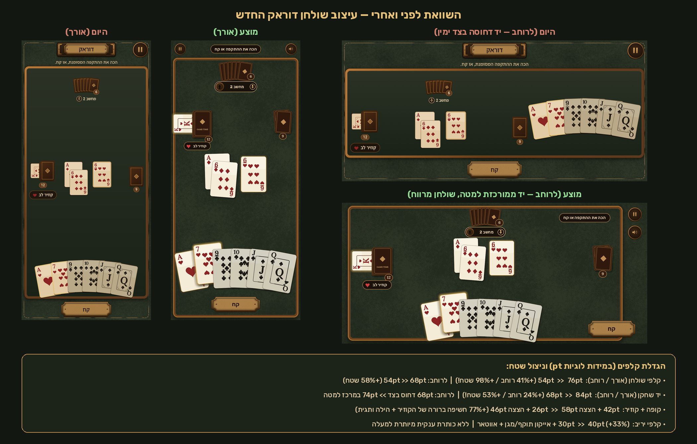
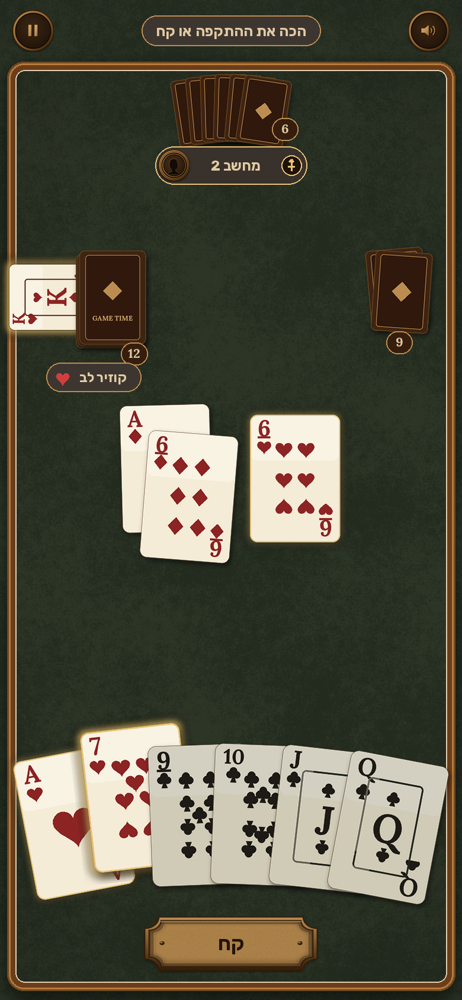
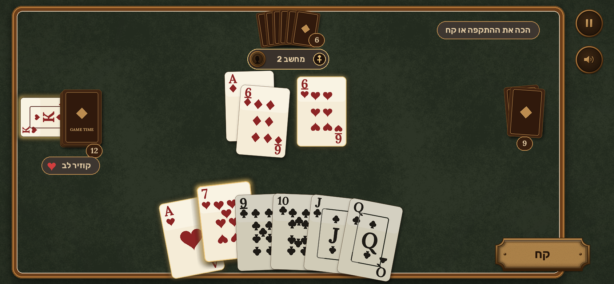
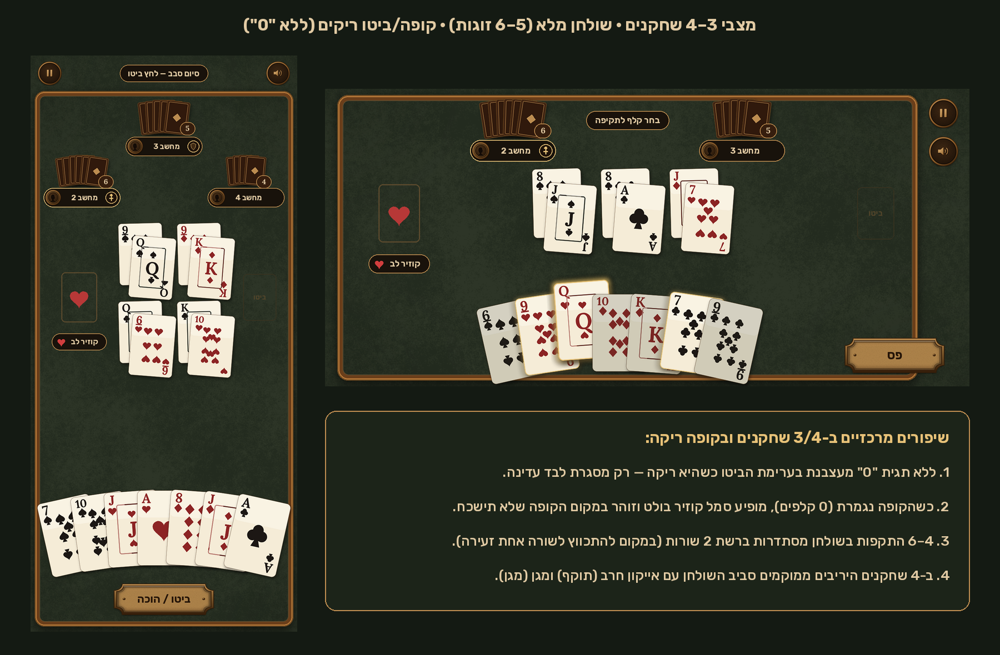
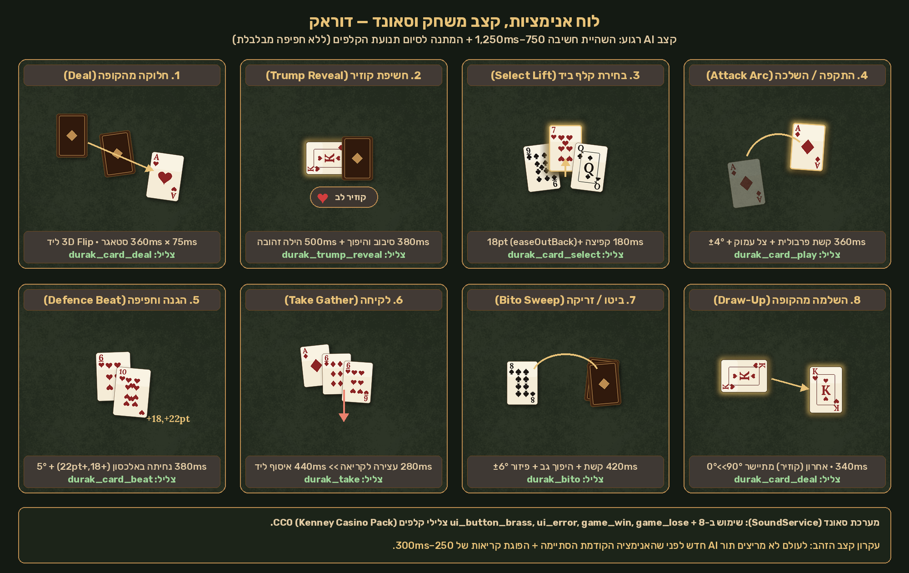

לחץ על כל תמונה להגדלה מלאה. הסקיצות מתאימות לאורך ולרוחב, עם קלפים גדולים משמעותית, קוזיר בולט מתחת לקופה, אנימציות מדורגות, קצב AI רגוע וסאונד מלא.
למעלה/שמאל: המצב הקיים היום. למטה/ימין: העיצוב המוצע — ביטול הכותרת הענקית שלוקחת גובה, מרכזיות יד השחקן למטה גם ברוחב, וקלפים גדולים משמעותית.

קלפי שולחן 76pt (+41% רוחב / +98% שטח), יד שחקן 84pt (+24% רוחב / +53% שטח), קוזיר K♥ בולט 46pt מתחת לקופה עם הילה זהובה ותגית קוזיר.

השולחן תופס כ-89% רוחב ו-95% גובה. יד השחקן ממורכזת למטה (74pt) במקום הדחיסה בצד ימין, והכפתור ("קח"/"ביטו"/"פס") יושב נוח לאגודל ימין.

ללא תגית "0" כשהביטו ריק, סמל קוזיר זוהר קבוע כשהקופה נגמרת, וגריד 2 שורות לזירה כשיש 4–6 התקפות.

חלוקה מדורגת מהקופה, חשיפת קוזיר, הרמת קלף ביד, קשת התקפה והגנה, השהיית קריאות לפני איסוף/ביטו, והשלמה מהקופה.

| רכיב | היום | מוצע באורך | מוצע ברוחב | שיפור |
|---|---|---|---|---|
| קלפי שולחן (התקפה/הגנה) | 54pt | 76pt (64pt ב-4+ זוגות) | 68pt | +41% רוחב / +98% שטח |
| יד שחקן | 68pt (דחוס בצד ברוחב) | 84pt (ממורכז) | 74pt (ממורכז למטה) | +24% רוחב / +53% שטח + חפיפה חכמה |
| קופה + הצצת קוזיר | 42pt / הצצה 26pt | 56pt / הצצה 46pt | 54pt / הצצה 42pt | +77% חשיפת קוזיר + הילה + תגית |
| קלפי יריב | 30pt | 40pt | 34pt | +33% + אווטאר ואייקון תוקף/מגן |
ui_button_brass, ui_error, game_win, game_lose + הוספת 8 צלילי קלפים ייעודיים (`durak_card_deal`, `durak_card_select`, `durak_card_play`, `durak_card_beat`, `durak_take`, `durak_bito`, `durak_trump_reveal`, `durak_turn_cue`) מחבילות Kenney Casino Audio / Boardgame Pack (CC0 1.0) ו-OpenGameArt CC0.